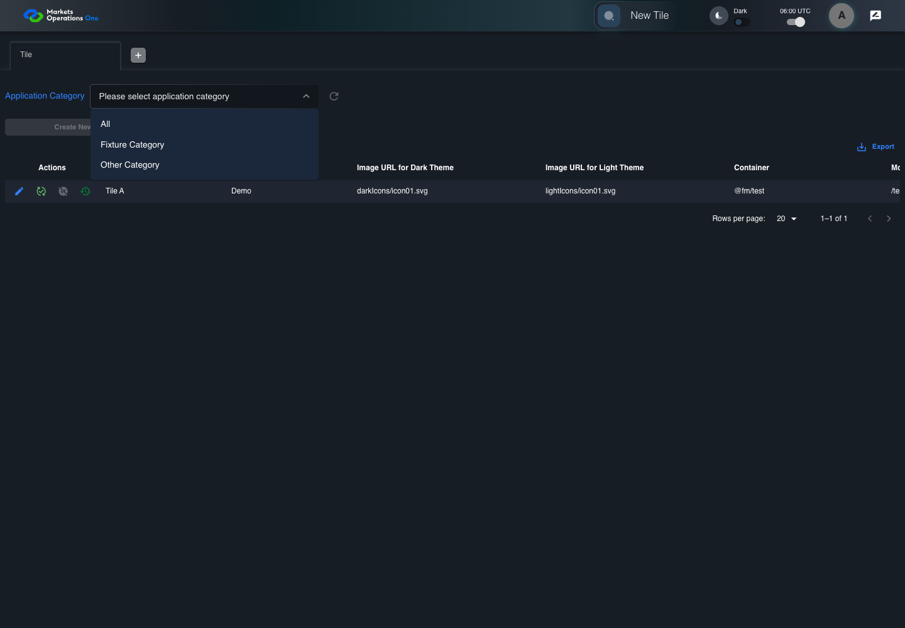

UI-ADM-SEL-006 actual administration UI with step evidence
PASS · application/run-050/ui-adm-sel-006-actual-administration-ui-with-step-evidence-5814899892ff-attempt-1 · ACTUAL_APPLICATION_LOCAL_SERVICES
Actual current React administration screens. Controlled browser login supplies UI-ADMIN-01 and TEST_OWNER, or the declared SUPER_USER. Controlled BFF routes return the case-declared records. Other controlled saves persist submitted field values. This run establishes frontend handling only. It does not execute BFF validation, storage, audit generation, or authorization.
2026-10-22T06:00:45.652Z to 2026-10-22T06:00:49.504Z
Assertions and result · Artifact manifest · Exact run inputs and source hashes
Result SHA-256:b9d74cec92f49f01d6b5c24776b5291692b116ef586d6abee03c4f6670f7e7bbMachine observations
- ui-origin-admin-requests.json
151d0d7fe8ad47f4d677f5e22e27f1f8514a66a1c888e1e64b776c6d67183b29
Screenshot capture: CAPTURED. Named frames: 7.
Step screenshot evidence: COMPLETE. 6/6 canonical steps have execution screenshots.
Canonical step timeline
Given Admin A is authenticated as fixture UI-ADMIN-01 with the case-specific permissions
Execution: PASSED.
1. step-01 Visible state after step 1: Given Admin A is authenticated as fixture UI-ADMIN-01 with the case-specific permissions
2026-10-22T06:00:47.180Z · 1440×1000
Step: /Users/lushevol/code/github/ratan-release-impact/workbench/tasks/ui-test-coverage-20261022/test-cases.md:9519
SHA-256:5b18e61c9d4c5c1f0cee1300bdcda34b1418a25c1a97509d35e55f2dac5d5abcAnd Fixture Category response has Tile A only; Other Category response has Tile B only
Execution: PASSED.2. step-02 Visible state after step 2: And Fixture Category response has Tile A only; Other Category response has Tile B only
2026-10-22T06:00:48.123Z · 1440×1000
Step: /Users/lushevol/code/github/ratan-release-impact/workbench/tasks/ui-test-coverage-20261022/test-cases.md:9520
SHA-256:be8ed1319252badc03f9bb58423cb05fff7e9375b850947fc12b1911db7e9410When Admin A opens combobox named "Application Category" inside the "Tile" administration tabpanel
Execution: PASSED.
3. step-03 Visible state after step 3: When Admin A opens combobox named "Application Category" inside the "Tile" administration tabpanel
2026-10-22T06:00:48.289Z · 1440×1000
Step: /Users/lushevol/code/github/ratan-release-impact/workbench/tasks/ui-test-coverage-20261022/test-cases.md:9521
SHA-256:81b4de87e7b1721a6e6108608444a18e3e1ebd5ff5601ec4016cc3613cc82664And Admin A clicks option named "Fixture Category" inside the popup for the "Application Category" combobox inside the Tile administration tabpanel
Execution: PASSED.4. step-04 Visible state after step 4: And Admin A clicks option named "Fixture Category" inside the popup for the "Application Category" combobox inside the Tile administration tabpanel
2026-10-22T06:00:48.643Z · 1440×1000
Step: /Users/lushevol/code/github/ratan-release-impact/workbench/tasks/ui-test-coverage-20261022/test-cases.md:9522
SHA-256:5543f3259166f5c25d01e41f12761d591423ee617b1fd45de2a070746cf7a1daThen cell named "Tile Name" inside row with Record Id "<Tile A record ID>" in the "Tile" administration data grid displays "Tile A"
Execution: PASSED.5. step-05 Visible state after step 5: Then cell named "Tile Name" inside row with Record Id "<Tile A record ID>" in the "Tile" administration data grid displays "Tile A"
2026-10-22T06:00:48.823Z · 1440×1000
Step: /Users/lushevol/code/github/ratan-release-impact/workbench/tasks/ui-test-coverage-20261022/test-cases.md:9523
SHA-256:86f0b56a09380e050ac30f3bc8c1ebea12ee266fc5ad650fc0bbebe5375de2a7And no cell in the "Tile Name" column of data grid with source identity "administration records" inside the "Tile" administration tabpanel displays "Tile B"
Execution: PASSED.6. step-06 Visible state after step 6: And no cell in the "Tile Name" column of data grid with source identity "administration records" inside the "Tile" administration tabpanel displays "Tile B"
2026-10-22T06:00:48.904Z · 1440×1000
Step: /Users/lushevol/code/github/ratan-release-impact/workbench/tasks/ui-test-coverage-20261022/test-cases.md:9524
SHA-256:8810a76db60a2f4012f7fd75f3f236ae7bdd63be73de78646a31a15d5b685902
Additional named frames
Screenshots establish visible state only. Assertions and traces support functional claims.